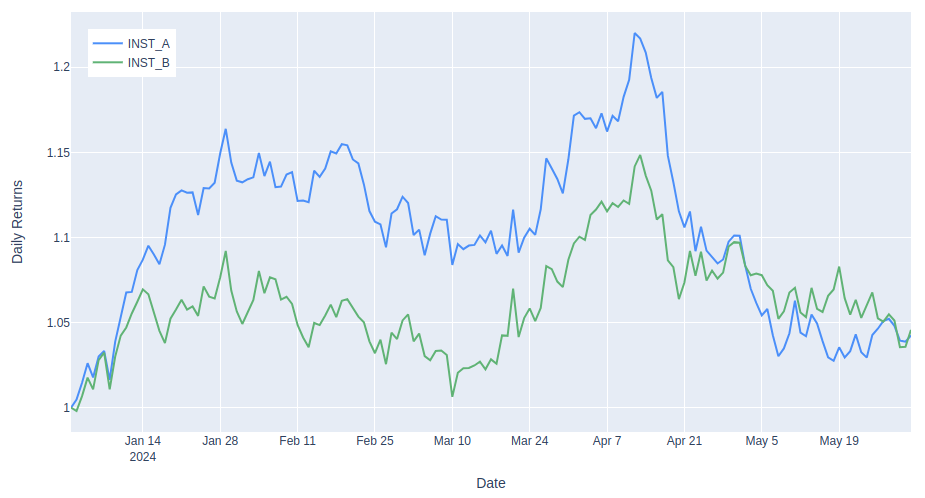

Rotating cube from scratch with PyOpenGL
This article explains the mathematics behind 3D graphics and presents a tutorial on rendering a cube in Python using PyOpenGL.

A quantitative developer publishing articles about mathematics and programming.
This article explains the mathematics behind 3D graphics and presents a tutorial on rendering a cube in Python using PyOpenGL.
Given vectors of timestamped observations of two jointly distributed random variables, this article derives & discusses the Python implementation of a single-pass algorithm to compute an exponentially decayed covariance of these observations.